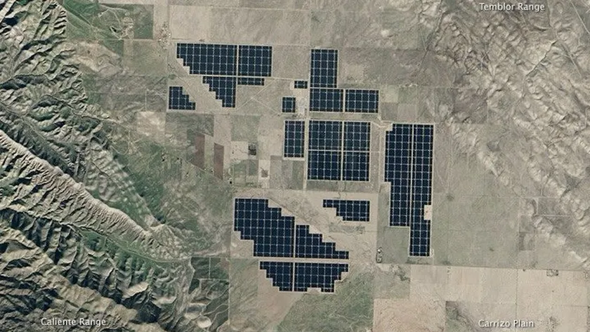
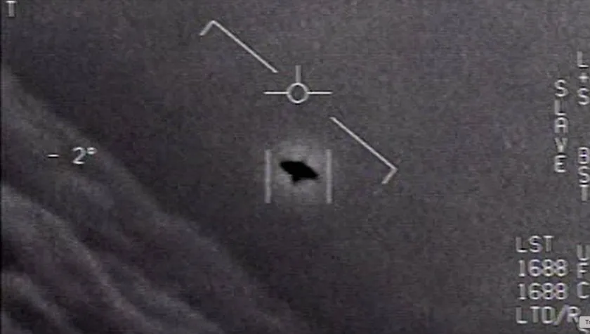
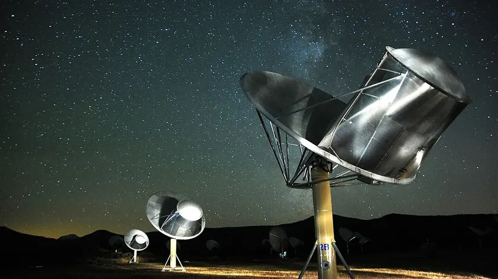

Rólunk
Küldetésünk
Célunk, hogy közelebb hozzuk a világegyetem titkait minden érdeklődőhöz. Hiszünk abban, hogy az űrkutatás nem csupán tudományos felfedezés, hanem inspiráció is: egy lehetőség arra, hogy megértsük helyünket a kozmoszban. Oldalunkon hiteles, közérthető és látványos tartalmakkal mutatjuk be a modern űrkutatás legfontosabb eredményeit.
Űrmissziók és Felfedezések
Itt követheted nyomon a legújabb űrküldetéseket, rakétateszteket és tudományos áttöréseket. A Mars‑járóktól a James Webb űrtávcsőig, a holdi visszatéréstől a jövő csillagközi terveiig minden fontos eseményt összegyűjtünk és érthetően bemutatunk. Ha érdekel, merre tart az emberiség az űrben, jó helyen jársz.
Kapcsolódj a Csillagokhoz
Legyen szó kérdésekről, együttműködésről vagy saját űr‑projektedről, szívesen hallunk rólad. Írj nekünk, ha szeretnél csatlakozni a közösségünkhöz, megosztanád ötleteidet, vagy csak kíváncsi vagy valamire a csillagászattal kapcsolatban. A kozmosz mindenkié — kezdjük együtt a felfedezést.
a postaládádból
Maradj naprakész a Zminki Space legfrissebb híreivel - a Földtől a Holdon, a Naprendszeren és azon túl is.
Feliratkozás ➤
Blog

Kapcsolatfelvétel az idegenekkel? Lehet, hogy az idegenek már tudják, hogy itt vagyunk
A Földet sok hatalmas, ember alkotta struktúra tarkítja. Egy idegen szem számára ezek árulkodó jelek lehetnek az intelligens történésekről, elárulva a létezésünket és sejtetve a képességeinket.

A nyilvánosság napja: Ha az ET kapcsolatba lépett volna velünk, hogyan kezelnénk a hírt?
Hogyan reagálnának az emberek, ha egy idegen civilizáció valóban kapcsolatba lépne velünk? A Space.com szakértőkkel beszélt, akik különféle véleményeket osztottak meg a lehetséges valós „nyilvánosságra hozatal napjáról”

Hol vannak az összes idegenek? Talán egyszerűen nem akarnak velünk beszélni
Egy olyan civilizáció, amely képes csillagközi utazásra, lehet az is, amely túllépett a hódításon, a túlzáson és az ökológiai önpusztításon – és ezért előfordulhat, hogy nem akar velünk beszélni.
ők találnának meg minket
A 2027 szeptemberétől nem korábban induló Near-Earth Object Surveyor űrtávcső célja,
hogy elősegítse a NASA bolygóvédelmi erőfeszítéseit, és felfedezze,
valamint jellemezze a potenciálisan veszélyes aszteroidák és üstökösök többségét,
amelyek az Föld pályájától 30 millió mérföldön belül haladnak el.
A NASA ünnepli Amerika 250. születésnapját
A kalandvágy és az innováció szelleme új magasságokba emeli az emberiséget.
A felfedezések korai napjaitól a Holdra tett első lépésekig és azokat a missziókat szemléltetve, amelyek a jövőnket formálják, a NASA a felfedezés szellemét képviseli, amely meghatározza nemzetünket. Ahogy az Egyesült Államok közeledik fél évezredes évfordulójához, a Freedom 250 kiemeli, hogyan hajtotta előre Amerikát az innováció, a bátorság és a tudományos vezetés — és hogyan folytatja a NASA a határok tágítását a következő generáció számára.
info@zminkispace.gov
+30 06 20 589 4267
8000 Székesfehérvár, Splerzel Ferenc köz 8-9.